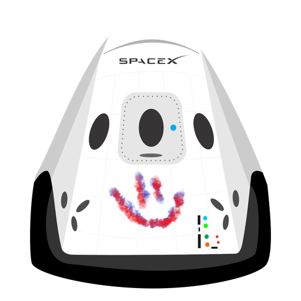

Hyperblog
Tu blog de
cabecera
Aquí vamos a hacer un blog post. Este cuenta como titulo
Y este es el párrafo de inicio donde vamos a explicar las cosas increíbles que se pueden hacer con ramas

Los blogs son la mejor forma de compartir información y tus ideas, mucho más que ir a conferencias o salir en YouTube (exepto si eres un RockStar). Pero estadisticamente, no lo eres.
Suscribete y dale like...